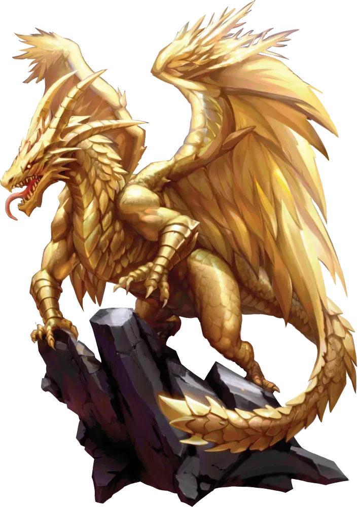

各年龄段数据卡
睿智而耐心的太古金龙浑身散发着一种超然物外的气度――尽管颇具讽刺意味的是，它们往往栖居在贴近地面的贫瘠平原或深邃裂谷之中。绝大多数太古金龙都过着与世隔绝的隐居生活，在寂静中审慎而有条不紊地思索着种种宏大构想，试图为困扰整个世界的重大难题寻觅解决之道。 某条太古金龙或许正苦苦追寻根治饥荒的良方，而另一条太古金龙则可能渴望建立一套实现世界和平、终结无谓战火的方法论。较年轻的金龙固然也会思索沉重而关键的议题，但太古金龙所忧心操劳的课题，往往直接关乎整个世界――或至少是世界某一重要层面――的兴衰存亡。 有时，其他生灵――无论是凡人还是不朽者――会恳请觐见太古金龙，就某个对该个体而言至关重要的难题求取它们的智慧。然而，鲜有太古金龙会轻易恩准此类觐见；至于那些原本未被它们视为头等大事的问题，愿意出手相助的太古金龙更是寥寥无几。 或许一位英雄或一国女王便足以打动一条寻常金龙的心弦，赢得它非凡的远见指点，乃至争取到它的亲自相助；但想要在一条太古金龙面前达成同样的壮举，难度却要高出千百倍。凡是能够成功做到这一点的人，无一不是名垂神话史册、故事被传唱数千年的传奇人物。 当然，这并不是在断言两者之间谁因谁果――究竟是先有雏龙还是先有龙蛋，谁也说不清楚。他们究竟是因为自身本就是神话级的非凡人物，才得以引起太古金龙的垂青；还是因为得到了太古金龙超自然的谋略指点与鼎力襄助，如获顺风相送般一路高歌猛进，最终才铸就了不朽神话？说真的，这两种可能性根本无法剥离清楚――尤其是当往事渐渐融入民间传说、具体细节在现代历史学家与学者眼中早已变得扑朔迷离之后。 比起某些更为热血冲动的金属龙，太古金龙要审慎理性得多；它们目光更为长远，甚至能够与一些出人意料的交谈对象平心静气地往来。因此，看到一条太古金龙与按常理它本该在道德立场上势不两立的存在――例如太古红龙、强大的吸血鬼，乃至深狱炼魔――对坐品茗、坐而论道，其实并不算什么稀奇事。话虽如此，倘若这些家伙言行无礼，或是犯下了令太古金龙实在无法坐视不理的恶劣暴行，它们就绝不会再受到金龙的欢迎；在最糟糕的情况下，它们甚至可能瞬间被净化万物的熊熊烈焰吞没。唯有彻头彻尾的蠢货，才会把太古金龙的耐心误当成缺乏行动力。 崇金风尚金龙是凡人心中最受尊崇的巨龙之一，因其深谋远虑、渊博智慧、非凡耐心与高尚美德而备受敬仰。正因如此，它们也成了极受欢迎的艺术创作题材。小到刷着斑驳黄漆的袖珍木雕摆件，大到纯金铸就的宏伟巨像，乃至介于两者之间的一切器物――这世上肯定有人在上面雕绘过金龙的身影。 黄金超凡者奥雷克希拉兹纵观千古岁月，几乎没有任何一条巨龙的箴言与指引，能像太古金龙“黄金超凡者”奥雷克希拉兹那样令世人趋之若鹜。黄金超凡者比绝大多数太古龙都还要古老；在几乎所有现存巨龙的记忆里，她似乎从一开始就已经存在于世，除了真正的不朽神魔之外，鲜有存在敢自称比她年长。奥雷克希拉兹的寿元甚至超过了相当一部分新晋神�o，亲眼见证过最伟大帝国的崛起与覆灭。在漫长的无数世纪里，她汲取了千古沉淀的智慧；但无论是古老传说，还是少数愿意谈及此事的不朽者都暗示，即便放在其他金龙当中，她也打从一开始就拥有超乎常理的睿智与洞见。 围绕黄金超凡者流传的神话数不胜数，更有不计其数的民间故事、英雄史诗乃至一部著名的歌剧，各自为她为何能如此不可思议地洞悉宇宙最深层的本源规律与众生内心提出了截然不同的解释。有些记载称她是某位神�o的孙女；另一些传说则讲她说服了一位神明（具体是哪位神明则因讲述者而异）收她为徒。在另一些版本的故事里，她曾在一棵树下沉睡整整百年――至于那究竟是无花果树、莲树，还是传说中的世界之树，同样取决于讲故事的人――并借此证得真正的圆满觉悟，超越了凡俗生灵乃至其他巨龙的理解极限。关于树下沉眠的传说还有一个变体：据说她当年蜷卧在一口神话中的智慧之泉旁酣睡，睡梦中凝结滑落的泪珠滴入泉中；泉中灵体将这一无心之举视作一场公平交易，准许她每流下一滴眼泪，便可取饮一小滴智慧泉水。 或许这些传说没有一个是真的，又或许其中不止一个暗合实情；但无论真相如何，奥雷克希拉兹既不刻意宣扬、也从不主动辟谣任何一个版本的说法。据那些曾当面直截了当地向她求证的人声称，她只是报以一抹耐心而神秘的微笑，反问道：“那么，你从那个故事里悟出了什么呢？” 鉴于她那近乎通神的敏锐洞察力声名远扬，来自各个血统的生灵――无论是凡人还是不朽者――纷纷前去寻访黄金超凡者以求指点，也就不足为奇了。尽管太古金龙普遍都会受到这般礼遇，但据传就连其他太古金龙也会煞费苦心地争取觐见她的机会，有时甚至到了急切渴求的地步。毕竟仔细想来，那些平日里总得为他人排忧解难、指点迷津的智者，偶尔自己也会陷入迷茫、需要旁人指点；到那时，它们又能向谁求助呢？在这个问题上，答案便是奥雷克希拉兹。 正如人们所能料想的那样，当全天下所有人都渴望向你讨教时，做这样一位贤者实在令人身心俱疲，黄金超凡者自也不例外。当他人试图以代价换取她的建言时，她往往会提出极其严苛的要求，或是设下近乎不可能完成的挑战与试炼。她会将每项考验的难度精准拿捏在每位恳求者“勉强存在一线理论可能”的边缘――既不至于荒谬绝伦到让人直接放弃，又使意外过关的概率渺茫得微乎其微。凡能成功完成试炼者，皆可如愿获得她的指点。坊间还有传闻称，倘若奥雷克希拉兹真心想要接见某人，她所设下的挑战看似艰巨骇人，实则她心知肚明完成起来远比表面容易得多。 黄金超凡者永远只在中立地点安排会面，绝不会在自己的巢穴中见客――事实上，至今也从未有人发现过她巢穴的所在。曾有不少蠢人企图搜寻并强闯她的圣所，或是为了当面提出私欲请求，或是妄图从她据传藏有诸多神器与神话奇珍的宝库中盗取宝物，但迄今尚无一人得逞。尽管有些人猜到了大致的地域范围，却无人能够找到她真正的居所：奥雷克希拉兹在各处修建了数百座看似不起眼却遍布机关陷阱的裂谷洞窟群，而她真正的巢穴，就隐匿在其中某一座深处的一面假墙之后。 黄金偶像太古金龙的智慧与威能是如此浩瀚无边，以至于围绕它们的教诲与事迹常常会自发兴起新兴教派，将它们尊奉为活圣徒或次级神明顶礼膜拜。太古金龙很少鼓励当地凡人的这类举动；根据每条金龙各自的性格脾气，以及该教派的具体活动与行事基调，它们的反应从受宠若惊、尴尬无奈到公开恼怒不一而足。 |
 太古金龙 |